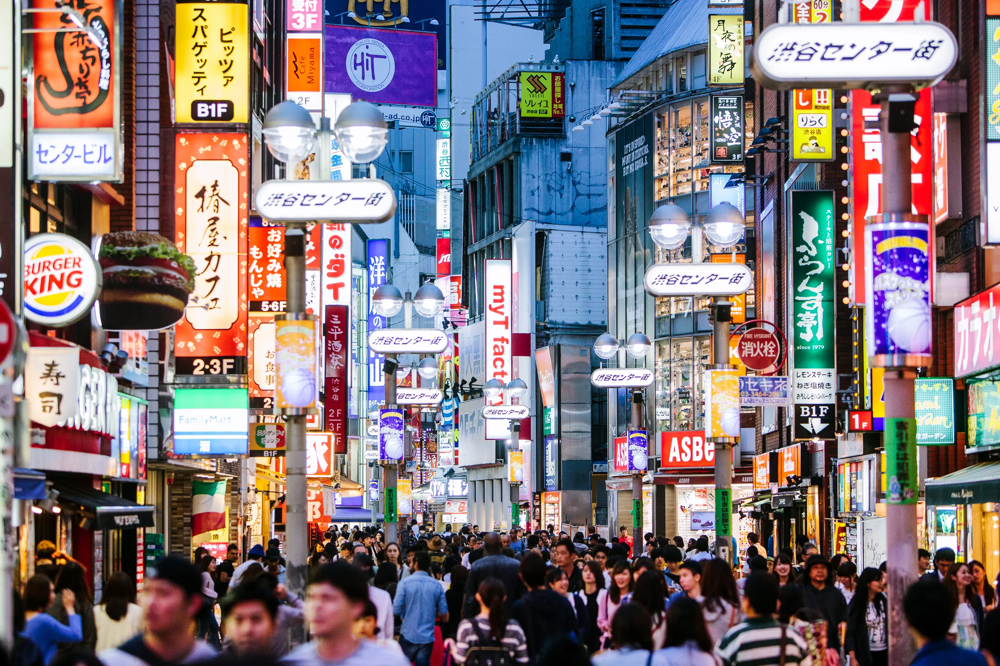
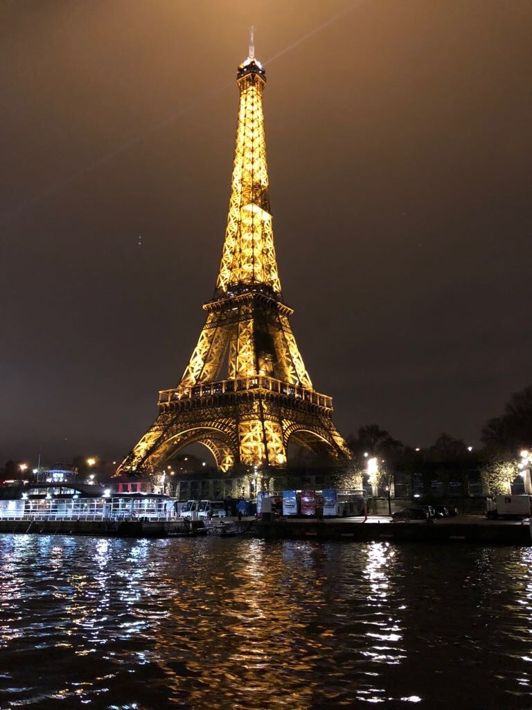
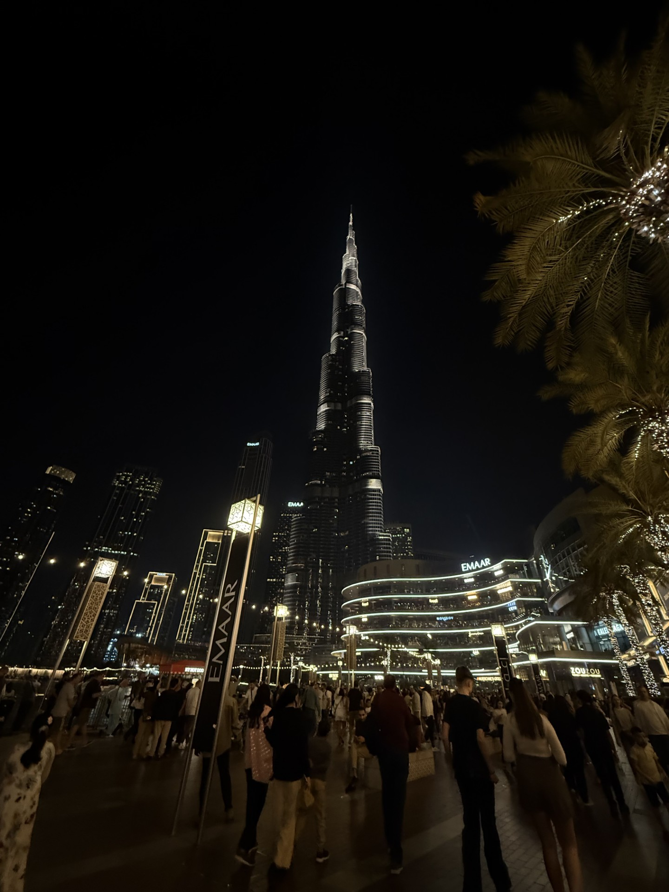
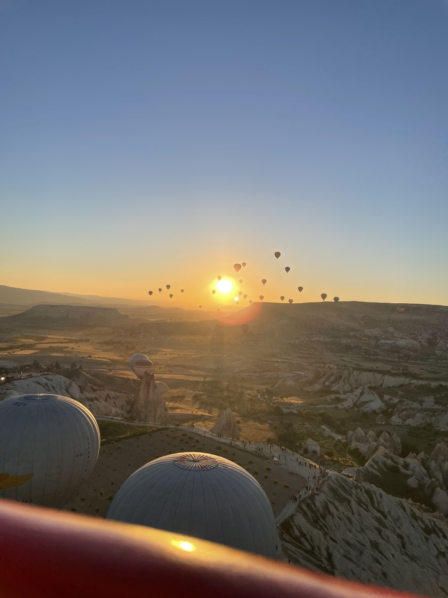

Hi, I'm Navya, I'm 14 years old and I'm a student at Eastside Preparatory School. I'm currently in 8th grade and next year I am going to attend Bellevue High School for 9th grade. I'm really excited to start high school, and I'm looking forward to trying new classes, meeting new people, and joining different clubs and activities.
One of the biggest parts of my life is swimming. I've been swimming competitively since I was 8 years old, and I'm currently swimming for Bellevue Club Swim Team and in the Senior Prep group. Swimming is a huge commitment, but I really love it. When I'm in the pool, everything else fades away; no stress and no pressure. It's the one place where my mind feels completely free and focused. No matter what kind of day I've had, swimming always helps me feel better.
Outside of swimming, I enjoy spending time with my friends and family. We usually hang out at the Bellevue Club, Bellevue Square Mall, or U Village. When the weather's nice, we like going to Waverly Beach Park or walking around downtown Kirkland. A lot of times, we just hang out at each other's houses, talking, watching movies, or making food together. It doesn't really matter where we are; we always find a way to have fun and laugh.
Some of My Favorite Places I've Traveled
I'm so lucky and grateful to have been to over 20 different countries. My family travels a lot, and it's something I've grown up doing my whole life. I love getting to explore new places, experience different cultures, and try all kinds of food. Every place is different, but these are a few that really stood out to me:
-
Japan – Everything was so clean and organized. The food was amazing, the cities were cool and busy, and I loved how advanced everything was.

Loud and bright streets of Tokyo at night
-
France – Paris is so beautiful. The Eiffel Tower, the cafés, the streets; everything felt like a movie. I could eat croissants and crepes every day.

The Eiffel Tower glowing over the Seine
-
UAE – We visit a lot for family, but there's also so much to do. You can never get bored in Dubai; whether you're on the Palm, downtown near the mall, or out exploring the desert, there's always something going on.

The Burj Khalifa At night outside the Dubai Mall
-
Costa Rica – It was such a good mix of nature, beaches, and adventure. We went ziplining, saw waterfalls, and just being surrounded by green everywhere felt amazing.

A monkey swinging through the trees outside our hotel room
-
Turkey – The mosques were beautiful, and the whole place was just so pretty. I loved walking through the markets and seeing all the colors and history.

Hot air balloons rising at sunrise in Cappadocia
My Favorite Music
Music is a big part of my everyday life. I'm always listening to something; whether I'm doing homework, walking around, or just scrolling. It helps me focus, and I almost always have music on in the background and on the speakers in my room. I listen to a lot of different artists, but here are some of my favorites:
- Drake
- Travis Scott
- The Weeknd
- PARTYNEXTDOOR
- Daniel Caesar
- Frank Ocean
- SZA
- Don Toliver
- Future
- Metro Boomin